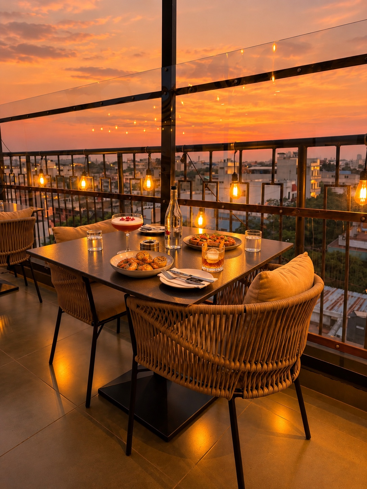
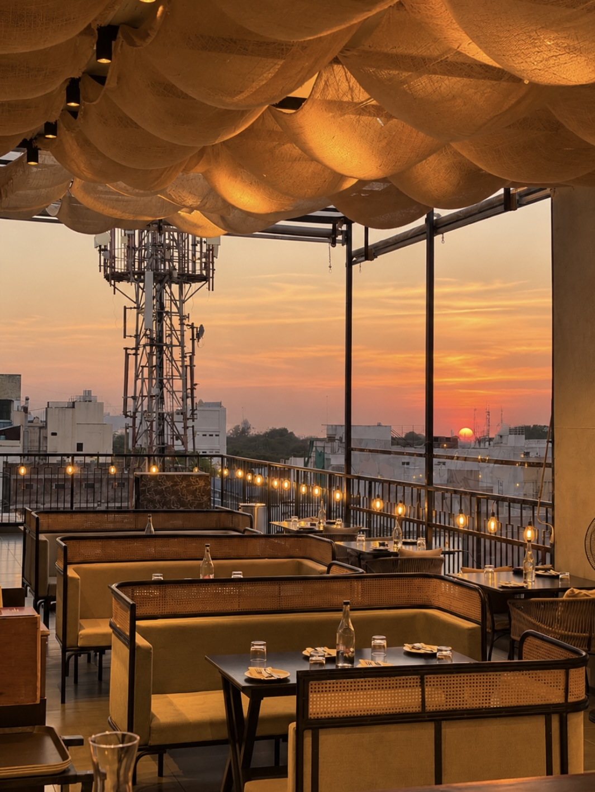
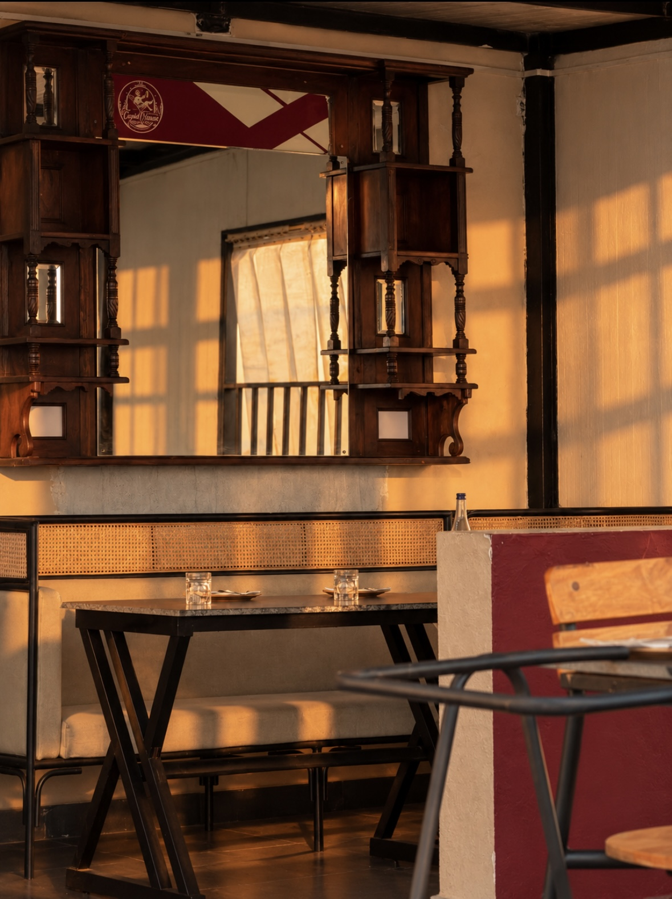
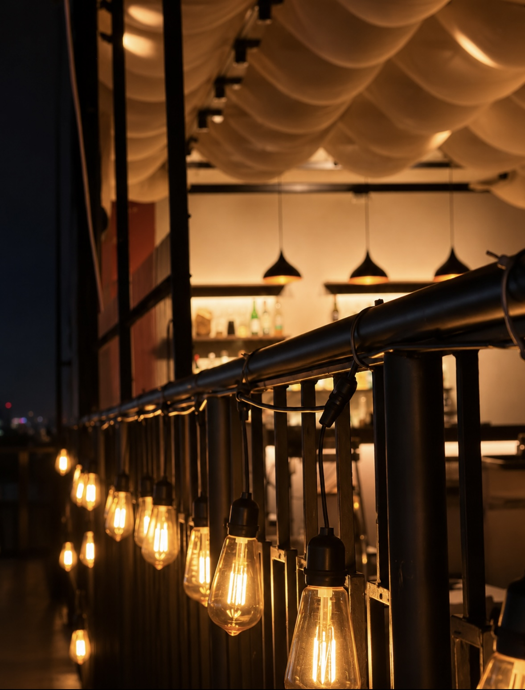
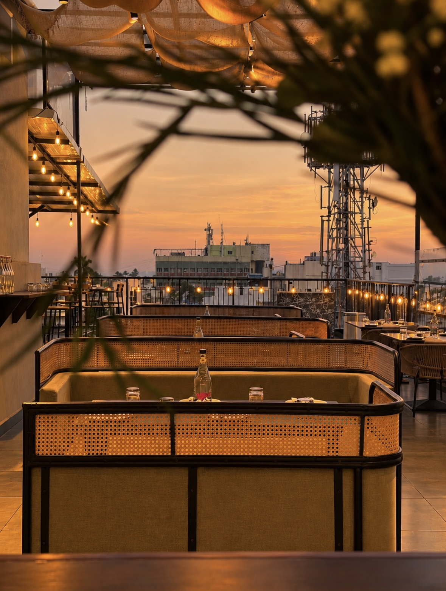
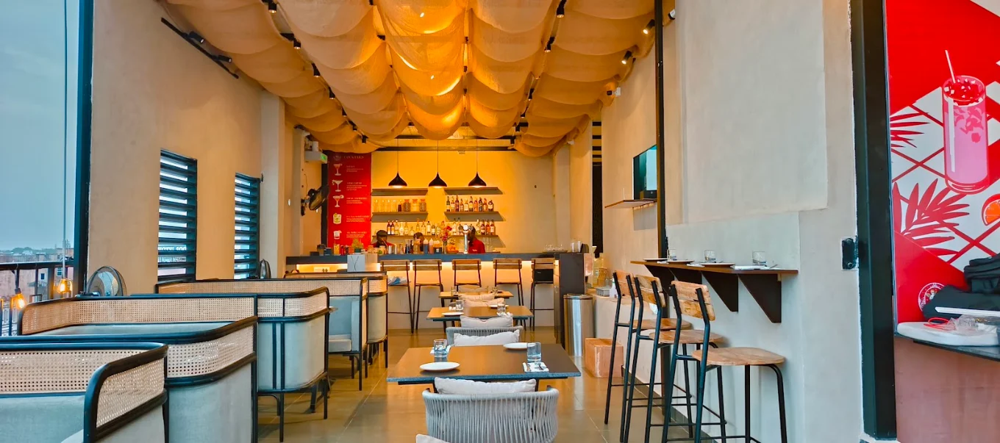

THE ROOFTOP
Cupid House
Rooftop.
Photos of the rooftop, dining room and bar.

CUPID HOUSE · PUDUCHERRYROOFTOP DINING
Inside
Cupid House.
The venue has a covered dining room, bar seating and an open rooftop overlooking Puducherry.
Find us at 170 Mission Street, MG Road Area.
Address and directions ↗




MG ROAD AREA · PUDUCHERRY
Get directions ↗